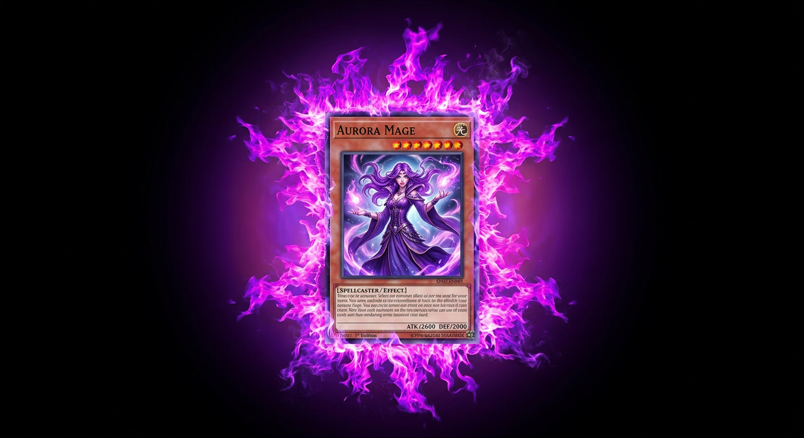

Visuel cible (IA) — aura enveloppante


Mythique jouable
Implémentation réelle — flammes bougent (flicker)
À gauche : visuel cible généré (aura enveloppante). À droite : vraie implémentation en jeu avec flammes PNG qui bougent autour du cadre quand la créature mythique est jouable.

Les 5 flammes PNG sont positionnées autour du cadre (haut/bas/gauche/droite) avec animation flicker individuelle. Fond noir → transparent, mix-blend screen, drop-shadow violet.